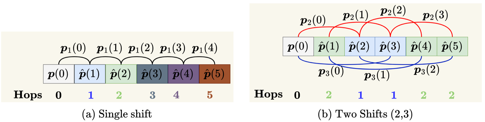
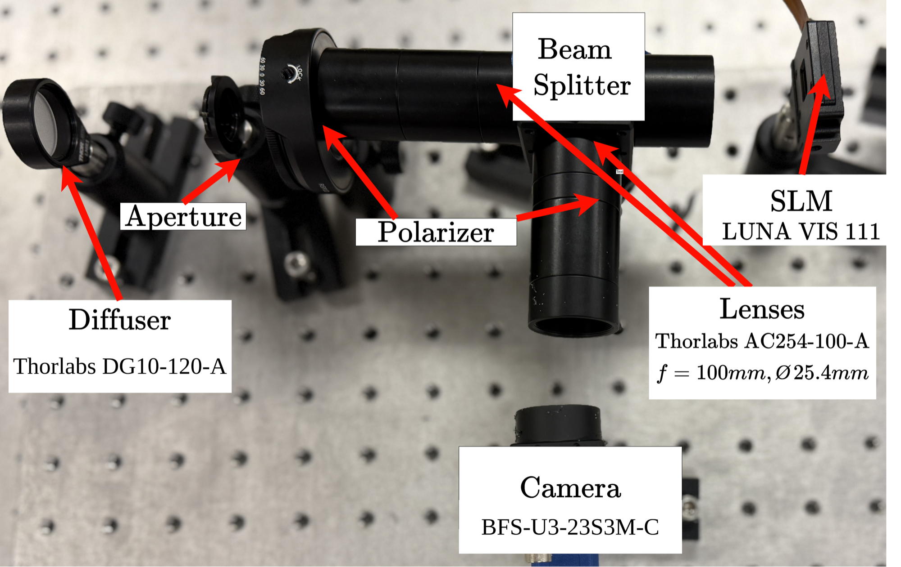
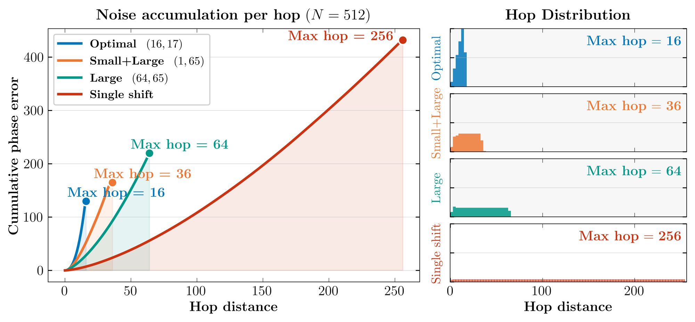
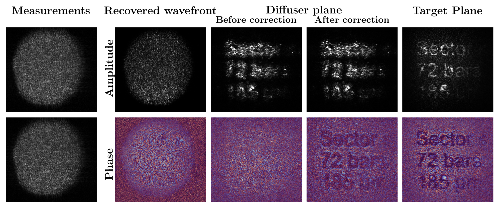
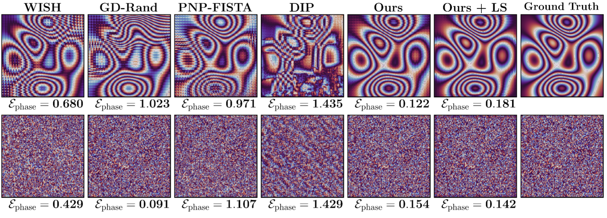
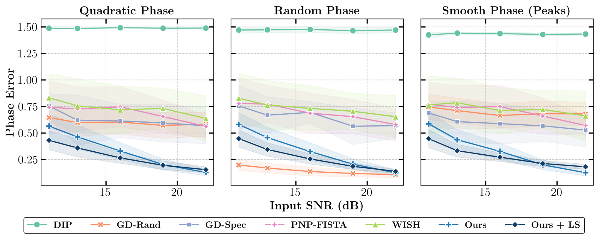

Abstract
Wavefront sensing involves estimating the phase and intensity of light, enabling a wide range of imaging applications, from adaptive optics and astronomy to biomedical imaging. Since conventional image sensors can only measure the spatial intensity distribution, phase retrieval arises as the central problem in wavefront sensing. Conventional interferometric approaches like phase-shifting interferometry (PSI) can recover phase information, but they rely on a stable reference beam that is difficult to realize in practical settings. To overcome this limitation, we propose a novel self-reference framework that relies on interference between shifted copies of the incoming wave; this results in pairwise phase differences between shifted pixels. We formulate an analytical solution for the complete phase retrieval based on the propagation of these differences across a connected graph. Furthermore, we provide a theoretical analysis of optimal measurement patterns, proving that co-prime shifts guarantee a connected graph and bound worst-case error accumulation, yielding a provably robust method. Extensive simulations demonstrate that complete phase profiles can be recovered from as few as eight shifted measurements, outperforming several existing approaches. Finally, we validate our framework using a hardware prototype, demonstrating real experiments for optical phase profile recovery, auto-refocusing, and imaging through scattering media.
Method
We recover an unknown wavefront by interfering it with spatially shifted copies of itself. Four phase-shifted intensity measurements provide pairwise phase differences, which are propagated through a graph to recover the full phase profile relative to a reference pixel.
- Complete connectivity with co-prime shifts. Pixels are graph nodes; measured phase differences are edges. Co-prime shifts guarantee every pixel is connected to the reference, enabling complete phase recovery.
- Robust shortest-path recovery. Phase estimates propagate from the reference along shortest paths. Equal-length estimates are averaged for robustness, while longer paths are discarded since they accumulate more noise.
- Provably optimal sensing. For \(N\) pixels, the consecutive co-prime shifts \(s = \lfloor \sqrt{N/2} \rfloor\) and \(t = s + 1\) minimize the maximum hop distance. For \(N = 512\), the optimal shifts are \(s = 16\) and \(t = 17\).
- Controlled error propagation. Phase error increases with hop distance, so minimizing the maximum number of hops bounds the worst-case error and reduces overall accumulated noise.



Real Results
Computational Refocusing
Digits target
Star target
Seeing through a scattering media

Simulated results
We evaluate phase recovery from shifted interferometric measurements in a synthetic setting, comparing against gradient descent (GD-Random), PnP-FISTA, WISH, and a Deep Image Prior (DIP) baseline across random, quadratic, and smooth phase profiles. We report the mean phase error at SNR ≈ 22 dB below, where our method achieves the lowest error for both quadratic and smooth phase profiles.
| Method | Quadratic phase | Random phase | Smooth phase (peaks) | |||
|---|---|---|---|---|---|---|
| 16 | 32 | 16 | 32 | 16 | 32 | |
| GD-Random | 0.695 ± 0.365 | 0.470 ± 0.434 | 0.138 ± 0.148 | 0.079 ± 0.152 | 0.791 ± 0.361 | 0.570 ± 0.404 |
| WISH | 0.852 ± 0.299 | 0.423 ± 0.366 | 0.854 ± 0.320 | 0.453 ± 0.377 | 0.898 ± 0.330 | 0.425 ± 0.367 |
| PnP-FISTA | 0.669 ± 0.341 | 0.456 ± 0.304 | 0.735 ± 0.329 | 0.425 ± 0.264 | 0.663 ± 0.341 | 0.479 ± 0.338 |
| DIP | 1.486 ± 0.031 | 1.491 ± 0.051 | 1.495 ± 0.037 | 1.447 ± 0.065 | 1.442 ± 0.063 | 1.423 ± 0.081 |
| Ours | 0.158 ± 0.104 | 0.099 ± 0.083 | 0.156 ± 0.099 | 0.094 ± 0.075 | 0.155 ± 0.096 | 0.097 ± 0.071 |
| Ours with LS | 0.183 ± 0.082 | 0.126 ± 0.065 | 0.158 ± 0.075 | 0.121 ± 0.055 | 0.205 ± 0.063 | 0.159 ± 0.050 |


BibTeX
If you find this work useful, please cite it. We will update this citation once the ECCV proceedings version is available.
@article{yismaw2026provable,
title = {Provable and Robust Wavefront Sensing via Self-Reference Interferometry},
author = {Yismaw, Nebiyou and Saragadam, Vishwanath and Sankaranarayanan, Aswin C and Asif, M Salman},
journal = {arXiv preprint arXiv:2604.03564},
year = {2026}
}